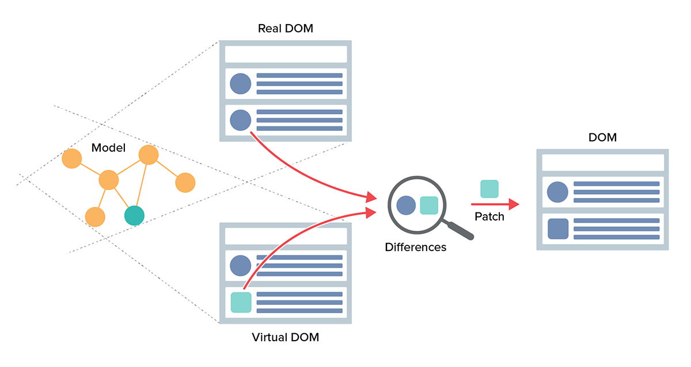
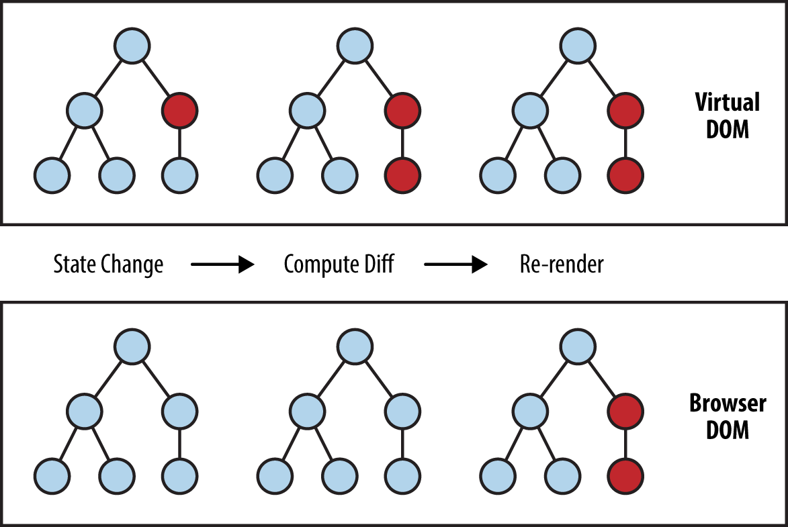

Moduł 1 - Zajęcia 1 - Wprowadzenie do React
Section1 Article1: Aplikacje webowe
We współczesnym tworzeniu stron internetowych zmieniły się nie tylko
techniki pozwalające stronom wyglądać lepiej, szybciej się ładować i
być bardziej przyjazne użytkownikom. Uległy zmianie również podstawy
procesu projektowania i tworzenia aplikacji webowych.
Weźmy dowolną stronę www, na przykład taką ze zbiorem przepisów
kulinarnych albo rozkładem treningów. Na każdej z nich będziemy
mogli wyróżnić podobne elementy tj. strona domowa, profil
użytkownika, wyszukiwarka.
Section1 Article2: Multiple-page Application
Kilka lat temu wykorzystywane było podejście, w którym budowało się
kilka oddzielnych stron HTML, mało powiązanych ze sobą.
Taka technika, nazywana multi-page application (MPA) wyróżniała się
przede wszystkim:
- Zastosowaniem architektury klient-serwer
- Logiką w całości znajdującą się na serwerze
-
Serwerem, który wysyła użytkownikowi gotowy dokument HTML w
odpowiedzi na każde zapytanie (np. kliknięcie w link)
- Przeładowywaniem się stron po każdym zapytaniu
- Niską interaktywnością
-
Ogólnie dobrym SEO ("search engine optimization" - optymalizacja
wyników wyszukiwarki)
Section1 Article3: Single-Page Application
Single-page application (SPA) wyróżnia:
- Architektura klient-serwer
-
Podczas pierwszego ładowania strony serwer zawsze zwraca stronę
startową - dokument index.html
-
Każde kolejne zapytanie do serwera wykonuje się jedynie celem
wymiany danych w formacie JSON
-
Aktualizacja interfejsu odbywa się dynamicznie w kliencie (w
przeglądarce)
-
Pierwsze załadowanie strony może być dość wolne (dlatego, że
zawiera ona cały interfejs)
-
Logika niezwiązana z bezpieczeństwem znajduje się w kliencie
- Gorsze SEO, w porównaniu do MPA (można to jednak naprawić)
- Lepsza skalowalność i utrzymywalność kodu
Single-page application vs. Multi-page application
Section2 Article1: Biblioteka React
React to biblioteka do tworzenia elementów interfejsu użytkownika.
Nie ma ona wbudowanego routera, modułu do komunikacji przez HTTP
itp. Niemniej jednak istnieje bogaty ekosystem bibliotek, który
pozwola wykonać dowolne zadanie.
Tworząc aplikacje z wykorzystaniem React, programista nie pracuje
bezpośrednio z drzewem DOM. Jego zadanie polega na opisaniu
interfejsu przy pomocy komponentów (szablonów) oraz zarządzanie
zmianami danych (modelu). Po wykryciu zmiany, React sam zaktualizuje
interfejs zgodnie z szablonem.
React jest wieloplatformowy - komponenty można renderować również:
Section2 Article2: Browser DOM i Virtual DOM
Browser DOM - pozwala na przedstawienie dokumentu HTML w postaci
struktury drzewa, w którym węzły odpowiadają poszczególnym
elementom. Przechowywany jest on w przeglądarce i ma bezpośredni
związek z tym, co widzimy na stronie.
o każdej zmianie w DOM przeglądarka wykonuje kilka skomplikowanych
operacji. Dlatego częste aktualizacjie drzewa wpływają negatywnie na
wydajność i responsywność (czas odpowiedzi) interfejsu.
Inżynierowie stojący za Reactem byli świadomi tego problemu -
doznania użytkownika strony będą lepsze tylko, jeżeli
zoptymalizowany zostanie proces aktualizacji drzewa. W odpowiedzi
opracowany został algorytm Virtual DOM.
Virtual DOM - abstrakcja, będąca niedokładnym odwzorowaniem
rzeczywistego drzewa DOM w postaci dokumentu JSON.
- Istnieje tylko w pamięci i nie renderuje się w przeglądarce
- Nie zależy od wewnętrznej implementacji przeglądarki
-
Wykorzystuje dobre praktyki aktualizacji rzeczywistego DOM
(optymalizacja poprzez grupowanie aktualizacji tzw. batching)
Section2 Article3: Algorytm aktualizacji DOM (Reconciliation)
W React każdy element interfejsu to komponent (niestandardowy lub
wbudowany), którego stan zależy od właściwości (props) lub
wewnętrznego stanu (state). Komponent to węzeł wirtualnego drzewa
DOM. Interakcja użytkownika z interfejsem zmienia stan aplikacji.

Aktualizacja stanu komponentu (props lub state) powoduje utworzenie
nowego wirtualnego drzewa DOM. Następnie, wykorzystując algorytm
breadth-first, zachodzi porównanie (diffing) dwóch wirtualnych drzew
- przed i po aktualizacji.
Czerwone węzły przedstawiają elementy, które się zmieniły. Obliczana
jest różnica między poprzednią i nową wersją wirtualnego drzewa DOM.
Następnie aktualizowane jest rzeczywiste drzewo DOM, ale tylko w
zakresie tych węzłów, które rzeczywiście się zmieniły. Gwarantuje to
minimalną liczbę aktualizacji, zwiększając tym samym wydajność
interfejsu.

Więcej o algorytmie reconciliation
Section3 Article1: Narzędzia
W celu skonfigurowania projektu opartego o React'a wykorzystuje się
najczęściej wiele narzędzi t.j. Node.js, Webpack, Babel. Każde z
nich wymaga odrębnych ustawień, które trzeba poznać i umieć
zastosować. Z czasem konieczne staje się również aktualizowanie tych
bibliotek, co wymaga od programisty śledzenia ich zmian. Z tego
względu powstały narzędzia, które mają wbudowaną całą potrzebną
konfigurację i to ich autorzy muszą się martwić o aktualizację
ustawień. Jednym z takich narzędzi jest Create React App.
Section3 Article2: Create React App
Na potrzeby szkolenia oraz do tworzenia małych/średnich projektów
rekomenduje się wykorzystywanie dedykowanego narzędzia od autorów
React.
Create React App:
-
Abstrahuje całą konfigurację, pozwalając skupić się na pisaniu
właściwego kodu aplikacji.
- Włącza niezbędne narzędzia: Webpack, Babel, ESLint itp.
- Umożliwia dodawanie kolejnych paczek ekosystemu React.
-
Ma funkcję wydobywania, która usuwa abstrakcję i odsłania
konfigurację.
npx create-react-app nazwa_folderu_projektu
W celu utworzenia aplikacji w obecnym folderze, zamiast nazwy
projektu wstawia się kropkę. Na przykład npx create-react-app .
npx — narzędzie pozwalające uprościć wykorzystywanie pakietów npm.
Dostarczane jest przez wersję 5.2.0 i wyższe. npm upraszcza
instalację i zarządzanie zależnościami umiejscowionymi w rejestrze.
npx natomiast upraszcza wykorzystywanie narzędzi CLI i innych plików
wykonywalnych, bez potrzeby ich konfiguracji w systemie lub
projekcie.
Dokumentacja Create React App
Section3 Article3: React DevTools
Narzędzie pozwalające podglądnąć drzewo komponentów React, ich stan
i właściwości. Profiler jest użyteczny podczas optymalizacji
aplikacji.
Devtools w Chrome Web Store
Section4 Article1: JSX
const link = <a href="https://reactjs.org/">React website</a>;
Nie jest to ani wiersz, ani HTML. Ta obrazowa składnia XML nazywana
jest JSX (JavaScript Syntax Extension) - rozszerzenie składni
JavaScript, przy pomocy którego opisuje się układ elementów, jakie
chcemy zobaczyć na ekranie.
-
Pozwala wykorzystywać obrazową składnię XML bezpośrednio w
JavaScript
- Upraszcza kod, sprawiając, że jest deklaratywny i czytelny
- Opisuje obiekty - elementy Virtual DOM
- To nie HTML, Babel przekształca JSX w funkcje bazowe
- W JSX można wykorzystywać wszystkie możliwości JavaScript
Elementy React: JSX tworzy elementy - najmniejsze bloki budowlane
React. Elementy Virtual DOM to zwykłe obiekty JavaScript, dlatego
łatwo można je tworzyć.
Przy wykorzystaniu JSX układ staje się podobny do zwykłego szablonu
HTML.
src/index.js
const imageUrl =
"https://images.pexels.com/photos/461198/pexels-photo-461198.jpeg?dpr=2&h=480&w=640";
const productPrice = 10.99;
const product = (
<div>
<img src={imageUrl} alt="Tacos With Lime" width="640" />
<h2>Tacos With Lime</h2>
<p>Price: {productPrice}$</p>
<button type="button">Add to cart</button>
</div>
);
-
Wewnątrz JSX można wykorzystywać dowolne ważne wyrażenie,
wkładając je w nawias klamrowy.
-
Wartość atrybutów wskazuje się w dowolnym cudzysłowie, jeśli jest
to zwykły wiersz i w nawiasie klamrowym, jeśli wartość jest
obliczana lub jej rodzaj różni się od wiersza.
-
Wszystkie atrybuty elementów React są nazywane w notacji
camelCase.
-
Tagi JSX mogą być rodzicami innych tagów JSX. Jeżeli tag jest
pusty lub samozamykalny, należy go zamknąć, wykorzystując />.
Section4 Article2: Renderowanie elementów do drzewa DOM
Aby zrenderować element do drzewa DOM, są w pakiecie react-dom
metody createRoot(container) i render(element), które pracują razem.
-
Pierwsza przyjmuje odnośnik do istniejącego elementu DOM, np.
div#root z index.html i tworzy korzeń, w którym będzie renderowała
się cała aplikacja.
-
Druga wymaga odnośnika do elementu React lub komponentu (co
renderować).
import ReactDOM from "react-dom/client";
const imageUrl =
"https://images.pexels.com/photos/461198/pexels-photo-461198.jpeg?dpr=2&h=480&w=640";
const productPrice = 10.99;
const product = (
<div>
<img src={imageUrl} alt="Tacos With Lime" width="640" />
<h2>Tacos With Lime</h2>
<p>Price: {productPrice}$</p>
<button type="button">Add to cart</button>
</div>
);
ReactDOM.createRoot(document.getElementById("root")).render(product);
Jeden render() na aplikację! React wykorzystuje model relacji
przodek - potomek, dlatego wystarczy tylko jedno wywołanie render()
w aplikacji. Renderowanie górnego elementu w hierarchii pociągnie za
sobą renderowanie całego poddrzewa.
Section4 Article3: Zasada wspólnego rodzica
Prawa część wyrażenia przypisywania powinna zwracać jedną wartość.
Przeanalizujmy następujący kod z nieważnym układem JSX.
const post = (
<h2>Post Header</h2>
<p>Post text</p>
);
Wyrażenie to jedna wartość, wynik jakichś obliczeń, stąd bierze się
zasada wspólnego rodzica.
const post = (
<div>
<h2>Post Header</h2>
<p>Post text</p>
</div>
);
Jeżeli w układzie zbędne opakowanie-tag nie jest potrzebne,
wykorzystywane są fragmenty podobne do DocumentFragment. Ten
wbudowany komponent znika w trakcie renderowania, podstawiając swoją
zawartość.
import { Fragment } from "react";
const post = (
<Fragment>
<h2>Post Header</h2>
<p>Post text</p>
</Fragment>
);
Składnię fragmentów można skrócić i nie dodawać importu Fragment.
Babel zrobi wszystko, co jest niezbędne do przekształcenia,
zamieniając puste tagi JSX na React.Fragment
const post = (
<>
<h2>Post Header</h2>
<p>Post text</p>
</>
);
Section4 Article4: Materiały dodatkowe
Section5 Article1: Komponenty
Komponenty - główne elementy architektoniczne aplikacji React, z
pomocą których interfejs można podzielić na niezależne części.
Programista tworzy osobne komponenty, które można łączyć, aby
formować większe lub wykorzystywać je jako samodzielne elementy
interfejsu. Najważniejsze w tej koncepcji jest to, że zarówno duże,
jak i małe komponenty można wykorzystać ponownie, tak w obecnym, jak
i nowym projekcie.
Aplikację React można przedstawić jako drzewo komponentów. Na jego
szczycie znajduje się komponent root, a w nim dowolna ilość innych
komponentów. Każdy komponent powinien zwrócić elementy JSX,
wskazując tym samym jaki HTML ma zostać wyrenderowany w DOM.
Section5 Article2: Komponenty funkcyjne
Komponent definiuje się jako funkcję JavaScript z bardzo prostym
kontraktem: funkcja otrzymuje obiekt właściwości, który nazywa się
props i zwraca drzewo elementów React.
const MyFunctionalComponent = props => <div>Functional Component</div>;
info! Nazwa komponentu musi zaczynać się wielką literą. Nazwy
elementów zaczynające się małą literą zarezerwowane są dla elementów
HTML. Jeśli spróbujesz nazwać komponent card, a nie Card, to w
trakcie renderowania React zignoruje go i wyrenderuje tag
<card></card>.
const Product = props => (
<div>
<img
src="https://images.pexels.com/photos/461198/pexels-photo-461198.jpeg?dpr=2&h=480&w=640"
alt="Tacos With Lime"
width="640"
/>
<h2>Tacos With Lime</h2>
<p>Price: 10.99$</p>
<button type="button">Add to cart</button>
</div>
);
// Chcąc wykorzystać nasz komponent zapisujemy go jako tag JSX
ReactDOM.createRoot(document.getElementById("root")).render(<Product />);
Section5 Article3: Właściwości komponentu (props)
Właściwości (propsy) to jedna z podstawowych koncepcji React.
Komponenty przyjmują dowolne właściwości i zwracają elementy React,
opisujące co powinno zostać wyrenderowane się w DOM.
-
Propsy wykorzystuje się do przekazywania danych od rodzica do
dziecka.
-
Propsy przekazywane się tylko "w dół" drzewa (tylko od komponentu
rodzica).
-
Zmiana propsów spowoduje aktualizacje komponentu (tzw. re-render).
W rezultacie może również zostać zaktualizowany DOM (jeżeli
zwracany JSX zmienił się w wyniku aktualizacji props).
-
Propsy są dostępne tylko do odczytu, nie można ich zmienić w
komponencie dziecku.
Propsem może być tekst przycisku, obraz, url lub dowolne dane dla
komponentu. Propsy mogą być łańcuchami lub rezultatami wyrażenia
JavaScript. Jeżeli props jest typu boolean to możemy pominąć
przekazywanie jego wartości true - zostanie ona przekazana
automatycznie.
const App = () => (
<>
<h1>Best selling products</h1>
<Product name="Tacos With Lime" />
</>
);
Komponent <Product> deklaruje parametr props, który zawsze będzie
obiektem zawierającym wszystkie przekazane propsy.
const Product = props => (
<div>
<h2>{props.name}</h2>
</div>
);
Dodamy do komponentu <Products> kilka nowych właściwości.
const Product = props => (
<div>
<img src={props.imgUrl} alt={props.name} width="640" />
<h2>{props.name}</h2>
<p>Price: {props.price}$</p>
<button type="button">Add to cart</button>
</div>
);
Ponieważ props to obiekt, możemy zdestrukturyzować go w podpisie
funkcji. Taki zabieg upraszcza kod i czyni go bardziej czytelnym.
const Product = ({ imgUrl, name, price }) => (
<div>
<img src={imgUrl} alt={name} width="640" />
<h2>{name}</h2>
<p>Price: {price}$</p>
<button type="button">Add to cart</button>
</div>
);
const App = () => (
<div>
<h1>Best selling products</h1>
<Product
imgUrl="https://images.pexels.com/photos/461198/pexels-photo-461198.jpeg?dpr=2&h=480&w=640"
name="Tacos With Lime"
price={10.99}
/>
<Product
imgUrl="https://images.pexels.com/photos/70497/pexels-photo-70497.jpeg?dpr=2&h=480&w=640"
name="Fries and Burger"
price={14.29}
/>
</div>
);
W rezultacie utworzyliśmy konfigurowalny komponent, który można
wykorzystać do odwzorowania produktu. Przekazujemy mu dane (props),
a w odpowiedzi otrzymujemy drzewo elementów React z podstawionymi
wartościami.
Section5 Article4: Domyślna wartość propsów
Co zrobić, jeśli komponent wymaga jakiejś wartości, a nie została
ona przekazana (odwołanie się do właściwości obiektu props zwróci
nam undefined).
W celu przypisania domyślnych wartości wykorzystuje się składnię
domyślnych wartości podczas destrukturyzacji obiektu props.
const Product = ({
imgUrl = "https://dummyimage.com/640x480/2a2a2a/ffffff&text=Product+image+placeholder",
name,
price,
}) => (
<div>
<img src={imgUrl} alt={name} width="640" />
<h2>{name}</h2>
<p>Price: {price}$</p>
<button type="button">Add to cart</button>
</div>
);
/*
* Określenie domyślnych wartości gwarantuje, że props.imgUrl będzie miał wartość,
* nawet jeśli nie była ona przekazana w komponencie rodzicu.
*/
ReactDOM.createRoot(document.getElementById("root")).render(
<Product name="Tacos With Lime" price={10.99} />
);
Section5 Article5: Właściwość props.children
Koncepcja elementów dzieci pozwala na łatwą kompozycję komponentów.
Jako "dzieci" można przekazywać dowolne elementy, w tym również
komponenty wbudowane.
-
Właściwość children jest zawsze dostępna w każdym komponencie.
Przyjmuje ona jako wartość elementy, które znajdą się pomiędzy
otwierającym i zamykającym tagiem JSX.
-
W komponentach funkcyjnych dostęp do właściwości udostępniony jest
poprzez props.children.
- Wartością props.children może być praktycznie cokolwiek.
Poniżej przykład komponentu profilu użytkownika (<Profile>) oraz
komponentu opakowującego <Panel>, w którym możemy umieścić dowolny
element.
const Profile = ({ name, email }) => (
<div>
<p>Name: {name}</p>
<p>Email: {email}</p>
</div>
);
const Panel = ({ title, children }) => (
<section>
<h2>{title}</h2>
{children}
</section>
);
const App = () => (
<div>
<Panel title="User profile">
<Profile name="Mango" email="mango@mail.com" />
</Panel>
</div>
);
Section5 Article6: Właściwość propTypes
Sprawdzanie typów otrzymywanych propsów pozwala wyłapać wiele błędów
na wczesnym etapie pisania kodu. Oszczędza to czas debugowania,
pomaga w przypadku nieuwagi programisty, a także ratuje nas w
rozrastających się aplikacjach. W przyszłości niezbędne będzie
znalezienie czasu na zapoznanie się z Flow lub TypeScript, ale na
początek wystarczy nieduża biblioteka.
Pakiet prop-types zawiera szereg walidatorów. Służą one do
sprawdzania poprawności otrzymanych typów danych w czasie
wykonywania kodu, powiadamiając o nieprawidłowościach w konsoli.
Jedyne, co należy zrobić, to opisać typy propsów otrzymywanych przez
komponent w specjalnej statycznej właściwości propTypes. Sprawdzenie
propsów przy pomocy prop-types zachodzi tylko w procesie wytwarzania
oprogramowania (process.env.NODE_ENV=development), w kodzie
produkcyjnym (process.env.NODE_ENV=production) nie ma takiej
potrzeby.
npm install --save-dev prop-types
Wykorzystamy teraz prop-types i opiszemy propsy komponentu Product.
import PropTypes from "prop-types";
const Product = ({
imgUrl = "https://dummyimage.com/640x480/2a2a2a/ffffff&text=Product+image+placeholder",
name,
price,
}) => (
<div>
<img src={imgUrl} alt={name} width="640" />
<h2>{name}</h2>
<p>Price: {price}$</p>
<button type="button">Add to cart</button>
</div>
);
Product.propTypes = {
imgUrl: PropTypes.string,
name: PropTypes.string.isRequired,
price: PropTypes.number.isRequired,
};
Sprawdzenie typów przy pomocy propTypes jest uruchamiane już po
przypisaniu się domyślnych wartości, wprowadzonych w defaultProps.
Dzięki temu sprawdzenie typów obejmuje także wartości domyślne.
Sprawdzenie typów przy pomocy PropTypes
Biblioteka prop-types
Section6 Article1: Renderowanie zgodnie z warunkami
Do renderowania elementów pod pewnym warunkiem wykorzystuje się
operatory warunkowe (if, else), logiczne (&& i ||) oraz ternary (? :
). Warunki można sprawdzać przed instrukcją return lub bezpośrednio
w JSX.
Jeśli zgodnie z warunkiem nic nie powinno zostać wyrenderowane,
możemy zwrócić null, undefined lub false. Wartości te nie zostaną
wyrenderowane. Pamiętaj, że wartość 0 nie jest interpretowana jako
wartość fałszywa (false) i zostanie wyrenderowana normalnie.
Renderowanie warunkowe przy pomocy operatora logicznego &&
Czyta się jako: jeśli warunek sprowadza się do true, wyrenderuj
wszystko na prawo od operatora.
const Mailbox = ({ unreadMessages }) => {
return (
<div>
<h1>Hello!</h1>
{unreadMessages.length > 0 && (
<p>You have {unreadMessages.length} unread messages.</p>
)}
</div>
);
};
Section6 Article2: Renderowanie warunkowe przy pomocy conditional
ternary operator (? : )
Czyta się jako: jeśli warunek sprowadza sie do true, wyrenderuj
wszystko po ?, w przeciwnym razie wyrenderuj przekazaną wartość po
:.
const Mailbox = ({ username, unreadMessages }) => {
return (
<div>
<h1>Hello {username}</h1>
{unreadMessages.length > 0 ? (
<p>You have {unreadMessages.length} unread messages.</p>
) : (
<p>No unread messages.</p>
)}
</div>
);
};
Ostatni przykład można zapisać inaczej, rezultat będzie taki sam.
const Mailbox = ({ name, unreadMessages }) => {
return (
<div>
<h1>Hello {name}</h1>
<p>
{unreadMessages.length > 0
? `You have ${unreadMessages.length} unread messages.`
: "No unread messages."}
</p>
</div>
);
};
Niech w komponencie produktu będzie jeszcze dostępna ilość sztuk.
const Product = ({ imgUrl, name, price, quantity }) => (
<div>
<img src={imgUrl} alt={name} width="640" />
<h2>{name}</h2>
<p>Price: {price}$</p>
<h1>Quantity: {quantity < 20 ? "Few left" : "In stock"}</h1>
<button type="button">Add to cart</button>
</div>
);
Materiały dodatkowe
Section7 Article1: Zbiory
W celu wyrenderowania listy jednakowych elementów wykorzystuje się
metodę Array.prototype.map(). Jako argument tej funkcji przekazujemy
callback, który dla każdego elementu tablicy zwróci element JSX. W
ten sposób otrzymamy tablicę elementów React do wyrenderowania.
const favouriteBooks = [
{ id: "id-1", name: "JS for beginners" },
{ id: "id-2", name: "React basics" },
{ id: "id-3", name: "React Router overview" },
{ id: "id-4", name: "Redux in depth" },
];
const BookList = ({ books }) => {
return (
<ul>
{books.map(book => (
<li>{book.name}</li>
))}
</ul>
);
};
const App = () => {
return (
<div>
<BookList books={favouriteBooks} />
</div>
);
};
Section7 Article2: Klucze
W trakcie wykonywania kodu z przykładu powyżej pojawi się
ostrzeżenie w konsoli. Będzie ono informowało, że do poprawnego
wyrenderowania listy elementów potrzebny jest klucz dla każdego z
nich. React nie jest w stanie odróżnić elementów listy wykonując
algorytm aktualizacji DOM (Reconciliation). Dlatego cała lista
będzie ponownie renderowana podczas każdej aktualizacji komponentu
(niezależnie, czy nie zmienił się żaden element listy czy zmienił
tylko jeden).
Klucz (key) — to specjalny props, który należy przekazać w trakcie
tworzenia elementów listy.
Elementy wewnątrz listy powinny być zabezpieczone kluczami, aby
zachować stabilność. React wykorzystuje klucze, aby określić, które
elementy listy należy utworzyć lub wyrenderować ponownie. W ten
sposób unikamy ponownego tworzenia wszystkich elementów listy za
każdym razem, gdy coś się zmienia.
Klucze powinny być:
-
Unikalne - klucz elementu musi być unikalny, ale jedynie wśród
swoich sąsiadów. Nie ma sensu tworzyć globalnie unikalnych kluczy.
-
Stabilne - klucz elementu nie powinien zmieniać się wraz z upływem
czasu, przestawieniem porządku elementów lub po odświeżeniu
strony.
Indeksy tablicy są unikalne, ale jednocześnie nie są stabilne -
zmiana listy spowoduje zmianę wartości kluczy. Data i czas są
unikalne, ale nie stabilne, ponieważ cały czas się zwiększają.
Wykorzystanie liczby losowej jest równoznaczne z sytuacją braku
klucza, ponieważ liczby te nie są ani unikalne, ani stabilne.
Najlepszym sposobem na utworzenie klucza jest wykorzystanie
statycznego ciągu znaków, który jednoznacznie identyfikuje element
listy pośród pozostałych. Najczęściej w formie klucza używa się
identyfikatorów obiektów utworzonych przez bazę danych - jest to
stała, niezmienna wartość. Będzie pasowała również dowolna unikalna
wartość jakiejś właściwości obiektu.
const favouriteBooks = [
{ id: "id-1", name: "JS for beginners" },
{ id: "id-2", name: "React basics" },
{ id: "id-3", name: "React Router overview" },
{ id: "id-4", name: "Redux in depth" },
];
const BookList = ({ books }) => (
<ul>
{books.map(book => (
<li key={book.id}>{book.name}</li>
))}
</ul>
);
Jeżeli obiekty tablicowe nie posiadają unikalnych wartości
właściwości, a kolekcja nie jest edytowalna (użytkownik nie ma
możliwości usuwania lub innej zmiany kolejności elementów, poza
dodawaniem nowych), można skorzystać z indeksów tablicy.
const favouriteBooks = [
{ name: "JS for beginners" },
{ name: "React basics" },
{ name: "React Router overview" },
{ name: "Redux in depth" },
];
const BookList = ({ books }) => (
<ul>
{books.map((book, index) => (
<li key={index}>{book.name}</li>
))}
</ul>
);
Section7 Article3: Materiały dodatkowe
Listy i klucze